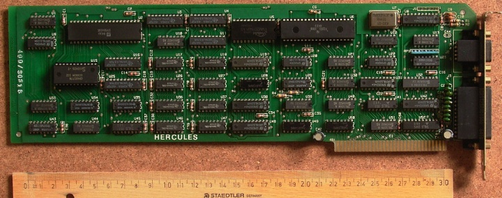
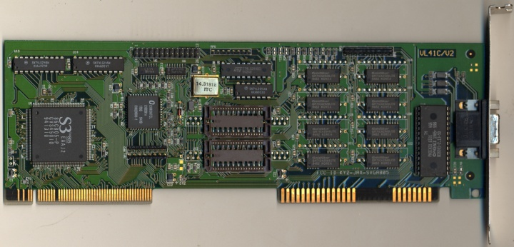
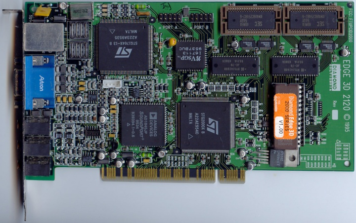
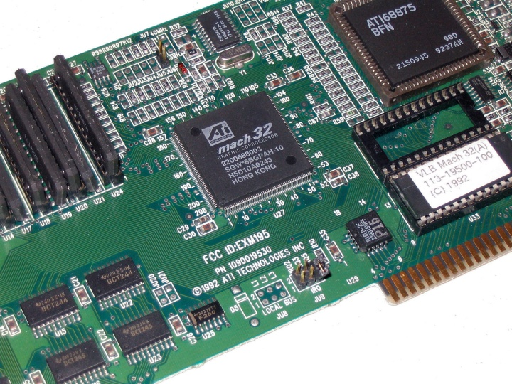
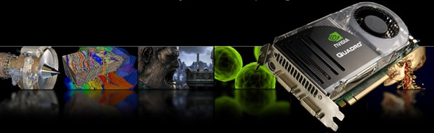
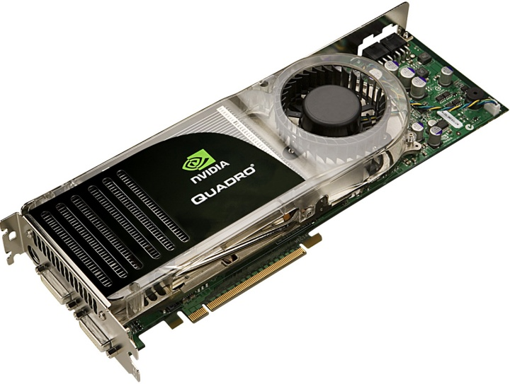
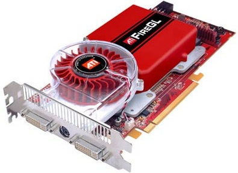
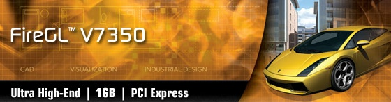
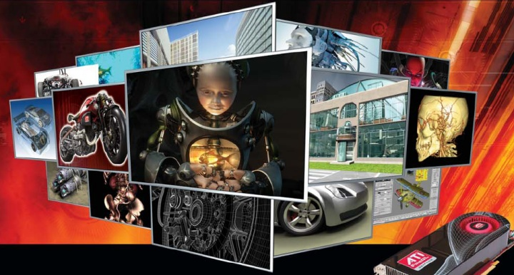

|
Dr. Ing. Tayfun Erkeskin
TET Ltd.
Mart 2006, Ýstanbul
Not: Orijinal olarak TurkCADCAM.net Dergisi 2. Sayýsý için hazýrlanmýþ bu makale, bazý güncelleþtirmelerin ardýndan Eylül 2007'de TurkCADCAM.net Portalý'nda yayýnlanmýþtýr.
Giriþ:
CAD/CAM ve 3D Animasyon alanlarýnda çalýþan tasarýmcýlar, bir þekilde Quadro, FireGL veya Wildcat gibi isimlere rast gelirler. Çalýþmalarýndaki randýman ve stabiliteyi arttýrma araþtýrmalarýnda, NVIDIA, ATI, 3Dlabs gibi firmalarýn adlarýný sýk sýk duyarlar. Kullandýklarý yazýlýmlarýn en üstün seviyede çalýþacaðý donaným platformlarýný seçerken baþvurduklarý tüm kaynaklarda, mutlaka profesyonel grafik hýzlandýrýcýlarýn kullanýlmasý gerektiðini öðrenirler.
3D Grafik Hýzlandýrýcýlarýn Tarihçesi
Elektronik ortamda veri iþleme ve üretme olanaklarý geliþtikçe ve yaygýnlaþtýkça, hesap sonuçlarýnýn görüntülenmesi, en arzulanýr operasyonlarýn baþýnda gelmiþtir. En komplike nümerik algoritmalarýn kullanýmý giderek kolaylaþýrken, üretilen sonuçlarýn vizüel platformlara taþýnmasý, yalnýzca logaritmik kaðýt, kurþun kalem, silgi ve çizim þablonlarýndan ibaret kalmayacaktý (!)
'Çare', üstün grafik donaným ünitelerinin, -en baþta yüksek satýr sayýlý ekranlara sahip monitörler ve onlarý 'besleyen' grafik çiplerinin/kartlarýnýn- geliþtirilmesiyle saðlandý.

Hercules Graphics Card 1984 (Kaynak: wikipedia.org)
80'li yýllar, Hercules-Monochrom, CGA, EGA gibi ön görüntüleme teknolojileri sonrasý, VGA - Video Graphics Array ile, yüksek renk derinliði ve 640*480 çözünürlük ile, PC monitöründe renkli televizyon ekranýndakine 'benzer' görüntülerin elde edilmesi gibi, çok büyük aþamalarýn dönemi oldu.

S3 805-chip, Jaton (Kaynak: wikipedia.org)
90'lý yýllara gelindiðinde, özellikle öncü ve önder S3 firmasýnýn teknolojik yenlikçilikleriyle, giderek artan seviyelerde çözünürlükler ile birlikte, ilk defa "ekran kartý", grafik kartý" adýnda özel ve ekstra donaným ünitelerinin piyasalara sunulmasýna þahit olundu.
2006 itibarý ile bu kýsa tarihsel vurguyu okuyanlara bir fikir vermesi açýsýndan, 1991 yýlýnda 1024 x 768 çözünürlüðü TrueColor modunda saðlayabilen "özel ekran kartlarýnýn", 10-15.000 Dolar (!) civarýnda olduðunu" ve ancak üniversiteler veya büyük sanayii kuruluþlarýnýn Ar-Ge ortamlarýnda "gözükebildiðini" belirtmek gerekir.
90'larýn ilk yarýsýnda tüketici pazarýna yönelik PC konfigürasyonlarýnda ekran kartý kullanýmý hýzla yaygýnlaþýrken, "paralelden" bir baþka büyük yeniliðin temelleri atýlýyordu.
Özellikle Cray/Silicon Graphics ve DuPont bünye ve çevrelerinde konuþlanan ekipler, 3D grafik operasyonlarýný kendi üzerinde ve CPU'dan (ana iþlemciden) baðýmsýz yapabilen çözümler üzerinde çalýþýyorlardý. Bu çalýþmalarýn meyveleri olarak, 90'larýn ortasýnda
firmalarý sahneye çýktý.
3Dfx ürünleri, ekran kartýna ek Voodoo "oyun hýzlandýrýcý" üniteleri olarak sükse yaparken, 3Dlabs GLINT serisi yüksek teknoloji çipleri, 2D/3D özellikli entegre "profesyonel tasarým" dünyasýna yönelik özel grafik kartlarýnda yer aldýlar.
Özellikle ülkemizde de çok popüler olan ELSA GLoria ve ELSA Synergy profesyonel çözümlerinde yer alan 3Dlabs GLINT ve 3Dlabs Permedia serisi çipler, "normal" bir kiþisel bilgisayarý, bir "grafik iþ istasyonuna" dönüþtürebiliyordu. Silicon Graphics firmasýnýn onbinlerce Dolarlýk süper iþ istasyonlarýyla ayný kategorideki performansý 5-10 bin Dolar arasý maliyetlere edinebiliyor olmak, tüm dünyadaki profesyonel tasarým üniteleri için mükemmel bir yatýrým opsiyonu oldu.

NVIDIA, 1995'de ilk grafik kartý NV1'i "Diamond Edge 3D" markasýyla piyasaya sundu (Kaynak: wikipedia.org)
90'larýn sonlarýna doðru, Silicon Graphics ekolünden bir baþka oyuncu daha sahnede yerini aldý: NVIDIA. Ýlk defa hem oyun alanýna hem de profesyonel sektörlere birden hitap edebilen tek çözümü sunabilmek, NVIDIA'nýn grafik sektörünün geliþimine en büyük ve stratejik katkýsý oldu.

ATI tarafýndan 1992 yýlýnda piyasaya sürülen Mach 32 VLB (Kaynak: wikipedia.org)
2000'lerle birlikte, ayný performans kapasitesini sunabilen ve hem oyun hem de tasarým dünyasýna yönelik çözümleri geliþtirebilen bir diðer firma da ATI oldu.
2D/3D Grafik Kartlarý ve Ýþ Modelleri
Ekran kartlarýnýn tarihsel geliþimini sunarken, "oyun" ve "profesyonel tasarým" alanlarýna birkaç kere deðindik. Ýki alanda da gerekli ve yeterli performansý sunabilen çözümler teknik açýdan geliþtirilir geliþtirilmez, piyasalar bu iki alanda farklý ürünlerle tanýþtý.
Otomotiv, tekstil, gýda vb. sektörlerde olduðu gibi,
- Yatay Pazar; satýlan birim baþýna maliyetlerin düþük, karlarýn az ve servislerin müþteriden uzak bir yapýda olduðu pazar.
- Dikey Pazar; birim baþýna karlarýn yüksek, satýþ rakamlarýnýn görece daha düþük, ama müþteriye yakýn servislerin olduðu pazar.
ayrýmlarýna uygun iþ ve yapý modelleri, 90'larýn ortalarýndan itibaren, grafik donaným sektöründe de uygulandý.
Ýlk kez ELSA ve MIRO firmalarý tarafýndan baþarýyla uygulanan ve günümüzde NVIDIA ve ATI'nin devam ettirdiði bu "iki bacaklý yapýlanma" modelinde
- personel
- mali kaynaklar
- ve iþ akýþýnýn dizayný
birbirlerinden tamamen farklý ekiplerin bünyesinde oluyor, "oyun" kartlarýnýn ve "profesyonel" ünitelerin satýþ öncesi sonrasýna yönelik operasyonlarda, hedef, strateji, planlama, ve lojistik birbirlerinden tamamen baðýmsýz þekillerde gerçekleþiyor.
Bu baðlamda; NVIDIA'daki GeForce ve ATI'deki Radeon ekipleri oyun geliþtiricileri ve satýcýlarý ve kullanýcýlarý ile birebir iliþkideyken, NVIDIA'daki Quadro ve ATI'deki FireGL timleri, tüm zamanlarýný
- Mekanik-CAD
- Mimari Tasarým
- Coðrafi Bilgi Sistemleri
- 3D Animasyon
gibi alanlarýn önde ve gözde yazýlým geliþtiricileri ve ürünleri büyük ölçeklerde kullanan müþterilerle birebir diyaloglar halinde geçiriyorlar.
Bu sayede bazý açýk ve eksikleri olan CAD yazýlýmlarýnýn eksiklerinin giderilmesi veya bazý programlara özel operasyonel destekler verilebilmesi mümkün olabiliyor.
Ayný zamanda, tasarým ekiplerinin en fazla gereksinim duyduklarý
- Operasyonel stabilite
- Yüksek performans
- Donaným bileþen uyumluluðu
garanti ediliyor
'Doðru' Bilgisayar/Ekran Kartý Seçimi
Temel donaným teknolojilerin iki hedef pazar, "üç boyutlu oyunlar" ve "profesyonel tasarým yazýlýmlarý" kullanýcýlarý, için geliþtirme ve destek süreçleri tamamen farklý özellikler taþýdýðýndan, yüksek performans ve operasyonel stabilite açýsýndan, tasarým ünitelerinin mutlaka profesyonel grafik çözümleri ile çalýþmasý gerekiyor.
Eðer ev/ofis/oyun alanýna yönelik bir çözüm, profesyonel ortamda kullanýldýðýnda, bir yýðýn uyum sorunu çýkýyor; ki bu da ciddi zaman ve finans kayýplarýna neden oluyor.
Tasarým amaçlý kullanýlacak "iyi" bir bilgisayar için, her halükarda
- iyi bir ana kart,
- yüksek miktarda (1 GB ve üzeri) güvenli bir marka RAM,
- yine yüksek performans bir hard disk
- profesyonel 2D/3D grafik hýzlandýrýcý kartý
gerekiyor.
Burada marka seçimi yaparken, ürünü sunan firmanýn satýþ öncesi ve sonrasý desteklerdeki "güvenirliði" de çok önemli bir kriter. Bir PC montajýnda kullanýlan çeþitli tip ürünlerin teknik spesifikasyonlarý aslýnda deðiþkenliðe açýk olmasalar da, yarýn öbür gün kullanýlan CAD/CAM yazýlýmýnýn veya iþletim sisteminin yeni bir versiyonu çýktýðýnda, ek programlar güncellendiklerinde, hem yazýlým hem de donaným tarafýnda çok hýzlý bir müdahaleler yapýlmasý gerekebiliyor.
Bazý firmalar o müdahaleleri geliþmiþ Ar-Ge bölümleri ve piyasa prestijleri nedeniyle, bazen birkaç gün içinde, bazen birkaç saat içinde yaparken, bazý firmalar bu tip "dolaylý servisleri" ihmal edebiliyorlar.
Ev/ofis/oyun pazarýna yönelik uygulamalarla çalýþan bir kullanýcýnýn, harikulade sahneleri olan keyifli bir oyunu oynarken, birden ekranýn kararmasý onu çok kýzdýrýr, ama bir restart sonrasý oyun seanslarýna devam edebilir.
Ama ürün geliþtiren, tasarým yapan, yaptýðý iþle katma deðer oluþturan bir dizayn ünitesinde, böyle bir olayýn "sýradan" addedilmesi olanaklý ve kabul edilebilir deðildir.
Temel bileþenler seçildikten sonra, oluþturulacak/edinilecek PC'nin "en kritik ve belirleyici unsur"u olan profesyonel ekran kartý seçiminde de dikkat edilecek bazý önemli noktalar bulunuyor.
- Hangi "tip" tasarým programý ile hangi "alanda" çalýþýlýyor?
- Kullanýmdaki/hedeflerdeki profesyonellik hangi ölçekte?
sorularýnýn, mutlaka yanýtlarýnýn verilmesi gerekiyor.
Ana Alanlar:
Mekanik Tasarým (M-CAD)
Mimari Tasarým (AEC) / Coðrafi Bilgi Sistemleri (GIS)
3D Animasyon / Dijital Ýçerik Üretimi (DCC)
Profesyonellik Seviyesi
Baþlangýç Seviyesi
Profesyonel
Mekanik-CAD alaný dinamiklerine uygun seçilmiþ bir profesyonel hýzlandýrýcý, Mimari Tasarým ve 3D Animasyon alanýndaki beklentileri çoðunlukla hiç karþýlamazken, inþaat veya reklam sektöründe baþarýyla kullanýlan bir Quadro veya FireGL kartýný, otomotiv sektörü için tavsiye etmek, etik ve teknik dýþý bir hareket olabiliyor.
Ama profesyonel tasarým dünyasýnda hiç yapýlmamasý gereken, bir "oyun kartý" ile çalýþmaya çalýþmak (!) oluyor...
2007 yýlýnýn CAD/CAM/CAE uygulamalarýna yönelik geliþmiþ (high-end) grafik kartlarý:

NVIDIA Quadro FX 5600


ATI Fire GL V7350

 |